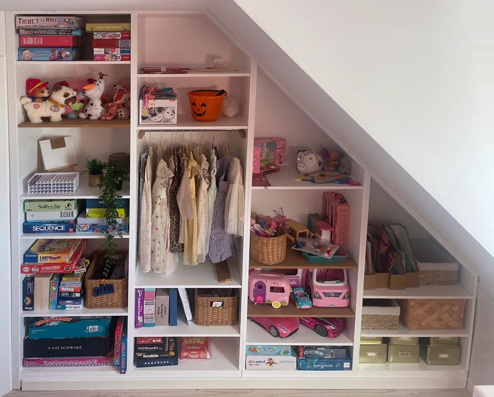

The story
A conversation.
A custom wardrobe.
My daughter's room was overflowing with toys. I needed a wardrobe that fitted the slope. So I worked through AI.
I cut the parts at Maker in Copenhagen, then assembled and painted them at home.


The model
Look inside the design.
Rotate the design. Separate the panels. Zoom in on the machining.
Explore the 3D modelA separate digital example. Proposed finishes and fittings are explained in the viewer.
Get started
Start in your AI.
A free skill for your own furniture project.
Start a fresh chat. Your agent sets up the skill, then guides you through your space and design.
The desktop link fills a new chat. Press Send to begin. For Claude Cowork, Codex or another compatible agent, copy and paste the prompt.
Read the starter prompt
Will this work with my AI?
Use an AI work environment that can download files and run commands. Setup supports macOS Apple Silicon and Linux x86-64, including hosted workspaces. Native Windows isn't supported. Allow about 4 GB free plus project space.
Setup details and limitationsWhat will the skill create?
The workflow covers measurements, 3D design, part files, supported hardware machining and cutting information. Your agent asks for missing measurements and workshop details. Designs and manufacturing files must be checked before cutting.
Do I need a CNC at home?
No. You need access to a workshop or supplier that can cut the parts. My build used the CNC at Maker in Copenhagen.
What does it cost?
The skill is free for personal, noncommercial projects. AI subscriptions, materials, hardware and workshop time are separate. Commercial use requires a separate licence.